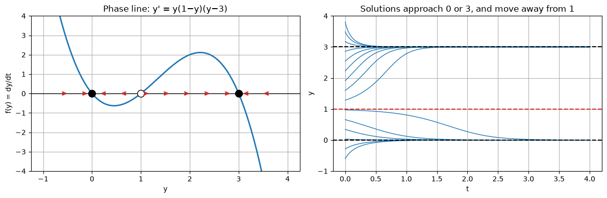
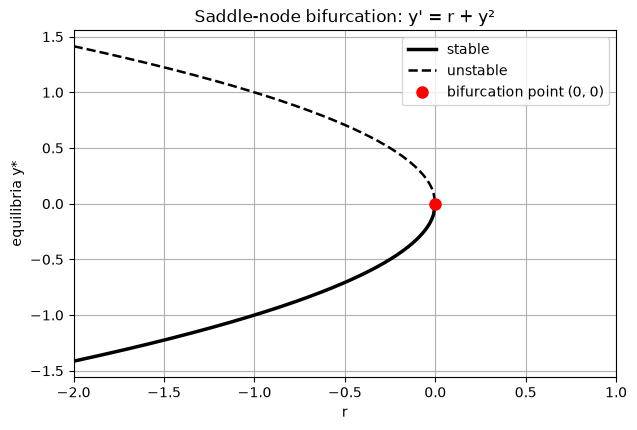
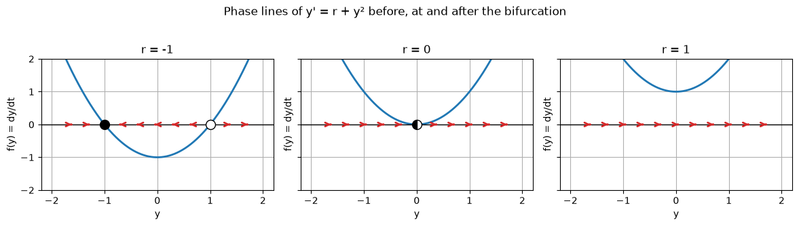
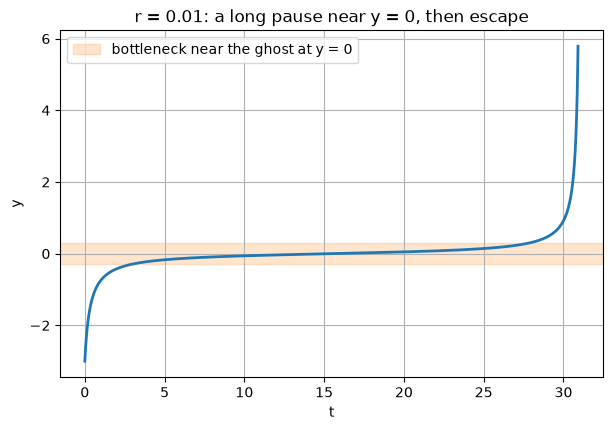
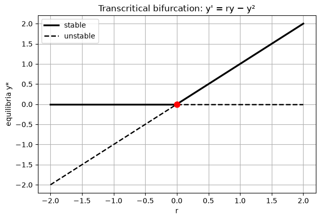
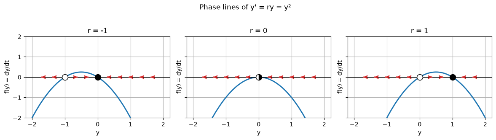
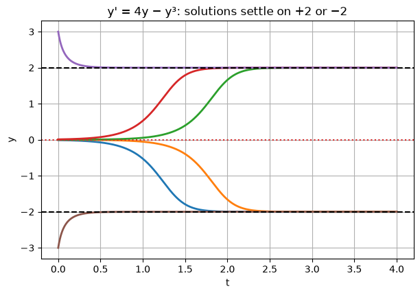
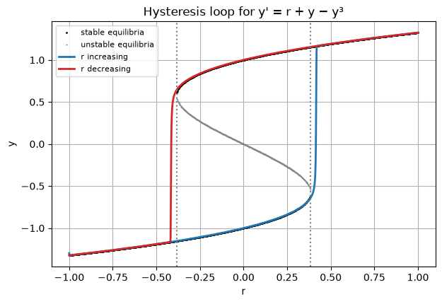
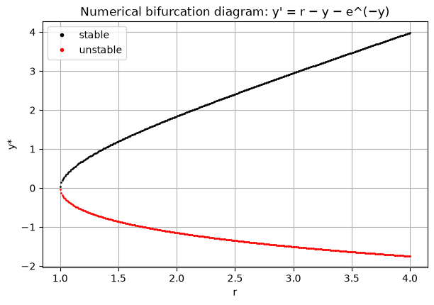
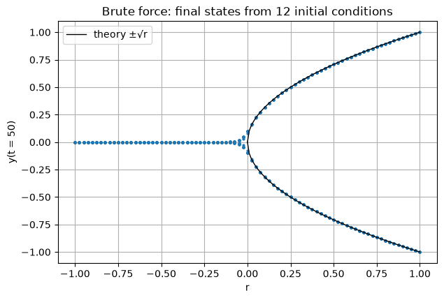

Bifurcations in First-Order Differential Equations
Author
Miraj Samarakkody
Published
October 14, 2026
How the long-term behaviour of \(\dfrac{dy}{dt} = f(y, r)\) changes, sometimes suddenly, as a parameter \(r\) is varied.
Contents 1. Autonomous equations, equilibria and the phase line 2. Stability of equilibria 3. What is a bifurcation? 4. Saddle-node bifurcation 5. Transcritical bifurcation 6. Pitchfork bifurcations (supercritical and subcritical) 7. Hysteresis 8. Application: fish harvesting and sudden collapse 9. Computing bifurcation diagrams numerically 10. Summary 11. Exercises
Prerequisite: the notes in first-order-differential-equations.ipynb, especially direction fields and RK4.
Code
import numpy as npimport matplotlib.pyplot as pltplt.rcParams["figure.figsize"] = (7, 4.5)plt.rcParams["axes.grid"] =Truedef rk4(f, t0, y0, h, n):# RK4 for y' = f(t, y). y0 may be a NumPy array to integrate many initial conditions at once. t = t0 + h * np.arange(n +1) y = np.zeros((n +1,) + np.shape(y0)) y[0] = y0for i inrange(n): k1 = f(t[i], y[i]) k2 = f(t[i] + h /2, y[i] + h /2* k1) k3 = f(t[i] + h /2, y[i] + h /2* k2) k4 = f(t[i] + h, y[i] + h * k3) y[i +1] = y[i] + h /6* (k1 +2* k2 +2* k3 + k4)return t, y
1. Autonomous equations and the phase line
An equation is autonomous if the right-hand side does not depend explicitly on \(t\):
\[\frac{dy}{dt} = f(y).\]
Its slope depends only on the current value of \(y\), so we can understand every solution without solving the equation, just by looking at the sign of \(f\).
Equilibria (fixed points): values \(y^*\) with \(f(y^*) = 0\). The constant function \(y(t) = y^*\) is a solution.
Where \(f(y) > 0\), \(y\) increases; where \(f(y) < 0\), \(y\) decreases.
A solution can never cross an equilibrium (by uniqueness), so it moves monotonically towards an equilibrium or off to \(\pm\infty\).
The phase line summarises this: a \(y\)-axis marked with the equilibria and arrows showing the direction of motion between them.
Worked example 1.1
\(y' = y(1 - y)(y - 3)\).
Equilibria: \(y^* = 0,\ 1,\ 3\).
Sign of \(f\) on each interval (test points):
interval
test \(y\)
\(f(y)\)
direction
\(y < 0\)
\(-1\)
\((-1)(2)(-4) = 8 > 0\)
↑ towards 0
\(0 < y < 1\)
\(0.5\)
\((0.5)(0.5)(-2.5) = -0.625 < 0\)
↓ towards 0
\(1 < y < 3\)
\(2\)
\((2)(-1)(-1) = 2 > 0\)
↑ towards 3
\(y > 3\)
\(4\)
\((4)(-3)(1) = -12 < 0\)
↓ towards 3
Conclusion: \(y^* = 0\) and \(y^* = 3\) attract nearby solutions (stable); \(y^* = 1\) repels them (unstable).
Code
def phase_line(f, ylim, ax=None, title=""):# Plot f(y) against y, mark equilibria and flow arrows.# Filled = stable, open = unstable, half-filled = semi-stable. ax = ax or plt.gca() y = np.linspace(*ylim, 2001) fy = f(y) ax.plot(y, fy, "C0", lw=2) ax.axhline(0, color="k", lw=1)# equilibria: grid points where |f| has a local minimum within one grid step of zero a = np.abs(fy)for i inrange(3, len(y) -3): step =max(abs(fy[i -1] - fy[i]), abs(fy[i +1] - fy[i]))if a[i] <= a[i -1] and a[i] < a[i +1] and a[i] <= step: left, right = fy[i -3], fy[i +3]if left >0> right: style =dict(mfc="k")elif left <0< right: style =dict(mfc="white")else: style =dict(mfc="k", fillstyle="left"if left >0else"right", mfcalt="white") ax.plot(y[i], 0, "o", ms=10, mec="k", zorder=3, **style)# arrows along the axisfor ya in np.linspace(*ylim, 13)[1:-1]: s = np.sign(f(ya))if s: ax.annotate("", (ya +0.12* s * (ylim[1] - ylim[0]) /6, 0), (ya, 0), arrowprops=dict(arrowstyle="->", color="C3", lw=2)) ax.set_xlabel("y"); ax.set_ylabel("f(y) = dy/dt"); ax.set_title(title)return axf =lambda y: y * (1- y) * (y -3)fig, axes = plt.subplots(1, 2, figsize=(12, 4))phase_line(f, (-1, 4), ax=axes[0], title="Phase line: y' = y(1−y)(y−3)")axes[0].set_ylim(-4, 4)t, Y = rk4(lambda t, y: f(y), 0, np.linspace(-0.6, 3.8, 15), 0.01, 400)axes[1].plot(t, Y, "C0", lw=1)for ys, c in [(0, "k"), (1, "C3"), (3, "k")]: axes[1].axhline(ys, color=c, ls="--")axes[1].set_ylim(-1, 4); axes[1].set_xlabel("t"); axes[1].set_ylabel("y")axes[1].set_title("Solutions approach 0 or 3, and move away from 1")plt.tight_layout()

2. Stability of equilibria
Linear stability test. Near an equilibrium, write \(y = y^* + \eta\) with \(\eta\) small. A Taylor expansion gives
\(y' = y^2\) has \(y^* = 0\) with \(f'(0) = 0\). Since \(y^2 \ge 0\), solutions below 0 move up towards 0, and solutions above 0 move up, away from it. The equilibrium is semi-stable: attracting from one side, repelling from the other. As we will see, this is exactly what an equilibrium looks like at a bifurcation.
Code
fp =lambda y: -3* y**2+8* y -3for ys in [0, 1, 3]:print(f"y* = {ys}: f'(y*) = {fp(ys):+d} -> {'stable'if fp(ys) <0else'unstable'}")# Check the exponential rate numerically: start near y* = 3 and fit the decay ratet, Y = rk4(lambda t, y: f(y), 0, 3.01, 0.01, 200)rate = np.polyfit(t[:100], np.log(np.abs(Y[:100] -3)), 1)[0]print(f"\nmeasured decay rate of |y - 3| ≈ {rate:.3f} (theory f'(3) = -6)")
As \(r\) changes, the graph of \(f\) shifts and deforms. Usually the equilibria just move a little and keep their stability. A bifurcation occurs at a value \(r = r_c\) where the qualitative picture changes: equilibria are created or destroyed, or their stability changes.
Necessary conditions at a bifurcation point \((y^*, r_c)\):
The first says \(y^*\) is an equilibrium. The second says the linear stability test is inconclusive there: the equilibrium is about to change stability, or two equilibria are merging.
A bifurcation diagram plots the equilibria \(y^*\) against \(r\), conventionally with solid lines for stable and dashed lines for unstable branches.
Every one-dimensional bifurcation looks, near the bifurcation point, like one of a few normal forms:
Type
Normal form
What happens at \(r = 0\)
Saddle-node
\(y' = r + y^2\)
two equilibria collide and disappear
Transcritical
\(y' = ry - y^2\)
two equilibria exchange stability
Supercritical pitchfork
\(y' = ry - y^3\)
one stable equilibrium splits into two
Subcritical pitchfork
\(y' = ry + y^3\)
two unstable equilibria merge into a stable one, which then becomes unstable
Bifurcation conditions:\(f = r + y^2 = 0\) and \(f_y = 2y = 0\) give \((y^*, r_c) = (0, 0)\).
\(r\)
equilibria
picture
\(r < 0\)
two: one stable, one unstable
a stable state exists
\(r = 0\)
one, semi-stable (\(y^* = 0\))
the two have merged
\(r > 0\)
none
every solution escapes to \(+\infty\)
Worked example 4.1
For \(r = -4\): equilibria \(y^* = \pm 2\); \(f'(-2) = -4\) (stable), \(f'(2) = 4\) (unstable). A solution starting at \(y_0 = 1\) lies between them, where \(f(1) = -4 + 1 = -3 < 0\), so it decreases towards \(-2\).
The “ghost” and the bottleneck
Just past the bifurcation (\(r\) small and positive) there is no equilibrium, but \(f\) is still tiny near \(y = 0\), so solutions slow down dramatically there before escaping. The time to pass through is
which becomes very long as \(r \to 0^{+}\). This bottleneck is an early-warning sign that a system is near a saddle-node.
Code
fig, ax = plt.subplots()r = np.linspace(-2, 0, 200)branch(ax, r, -np.sqrt(-r), True, label="stable")branch(ax, r, np.sqrt(-r), False, label="unstable")ax.plot(0, 0, "ro", ms=8, label="bifurcation point (0, 0)")ax.set_xlim(-2, 1); ax.set_xlabel("r"); ax.set_ylabel("equilibria y*")ax.set_title("Saddle-node bifurcation: y' = r + y²"); ax.legend();phase_lines_row(lambda y, r: r + y**2, [-1, 0, 1], (-2, 2), "Phase lines of y' = r + y² before, at and after the bifurcation")


Code
# Bottleneck: time to travel from y = -10 to y = +10 for small r > 0def passage_time(r, h=1e-3): y, t =-10.0, 0.0 g =lambda t, y: r + y**2while y <10: k1 = g(t, y); k2 = g(t, y + h/2*k1); k3 = g(t, y + h/2*k2); k4 = g(t, y + h*k3) y += h /6* (k1 +2*k2 +2*k3 + k4); t += hreturn tprint(f"{'r':>7}{'RK4 time':>10}{'(2/√r)·arctan(10/√r)':>22}{'π/√r':>8}")for r in [1.0, 0.1, 0.01, 0.001]: exact_T =2/ np.sqrt(r) * np.arctan(10/ np.sqrt(r))print(f"{r:7.3f}{passage_time(r):10.3f}{exact_T:22.3f}{np.pi/np.sqrt(r):8.3f}")
The passage time grows like \(1/\sqrt{r}\): at \(r = 0.001\) the solution lingers near \(y = 0\) for about 99 time units, even though no equilibrium exists there.
Code
t, Y = rk4(lambda t, y: 0.01+ y**2, 0, -3.0, 0.01, 3100) # stop at t = 31, just before blow-upmask = np.abs(Y) <6plt.plot(t[mask], Y[mask], lw=2)plt.axhspan(-0.3, 0.3, color="C1", alpha=0.2, label="bottleneck near the ghost at y = 0")plt.xlabel("t"); plt.ylabel("y"); plt.title("r = 0.01: a long pause near y = 0, then escape")plt.legend();

5. Transcritical bifurcation
Normal form:\(\quad y' = ry - y^2 = y(r - y).\)
Equilibria:\(y^* = 0\) and \(y^* = r\). They exist for all\(r\) and cross at \(r = 0\).
Stability:\(f'(y) = r - 2y\).
at \(y^* = 0\): \(f' = r\), stable for \(r < 0\), unstable for \(r > 0\)
at \(y^* = r\): \(f' = r - 2r = -r\), unstable for \(r < 0\), stable for \(r > 0\)
At \(r = 0\) the two equilibria pass through each other and exchange stability.
Worked example 5.1
Take \(r = 2\). The equilibria are \(0\) (since \(f'(0) = 2\), unstable) and \(2\) (since \(f'(2) = -2\), stable). This is the logistic equation: a small population starting at \(y_0 = 0.1\) grows to the carrying capacity \(2\). If instead \(r = -1\), the only stable state is \(y^* = 0\): the population dies out.
Typical setting: whenever \(y = 0\) is an equilibrium for every \(r\) (zero population, zero laser output, zero infection), a transcritical bifurcation marks the threshold where the non-zero state takes over. In epidemics this is the condition \(R_0 = 1\).
Code
fig, ax = plt.subplots()rn, rp = np.linspace(-2, 0, 100), np.linspace(0, 2, 100)branch(ax, rn, 0* rn, True, label="stable"); branch(ax, rp, 0* rp, False, label="unstable")branch(ax, rn, rn, False); branch(ax, rp, rp, True)ax.plot(0, 0, "ro", ms=8)ax.set_xlabel("r"); ax.set_ylabel("equilibria y*")ax.set_title("Transcritical bifurcation: y' = ry − y²"); ax.legend();phase_lines_row(lambda y, r: r * y - y**2, [-1, 0, 1], (-2, 2), "Phase lines of y' = ry − y²")


6. Pitchfork bifurcations
These occur in systems with a symmetry\(y \to -y\), meaning \(f(-y) = -f(y)\), so equilibria appear in symmetric pairs.
6.1 Supercritical pitchfork
Normal form:\(\quad y' = ry - y^3.\)
Equilibria:\(y(r - y^2) = 0\), so \(y^* = 0\) always, and \(y^* = \pm\sqrt{r}\) when \(r > 0\).
Stability:\(f'(y) = r - 3y^2\).
at \(y^* = 0\): \(f' = r\), stable for \(r < 0\), unstable for \(r > 0\)
at \(y^* = \pm\sqrt{r}\): \(f' = r - 3r = -2r < 0\), stable
As \(r\) passes 0, the single stable state at \(0\) becomes unstable and two new stable states branch off smoothly. The system must “choose” one: this is symmetry breaking, as in a buckling beam, which bends either left or right.
Worked example 6.1. At \(r = 4\) the equilibria are \(0\) (since \(f'(0) = 4\), unstable) and \(\pm 2\) (since \(f'(\pm 2) = 4 - 12 = -8\), stable). Starting at \(y_0 = 0.01\) the solution goes to \(+2\); starting at \(y_0 = -0.01\) it goes to \(-2\).
6.2 Subcritical pitchfork
Normal form:\(\quad y' = ry + y^3.\)
Equilibria:\(y^* = 0\) always, and \(y^* = \pm\sqrt{-r}\) when \(r < 0\).
Stability:\(f'(y) = r + 3y^2\).
at \(y^* = 0\): \(f' = r\), stable for \(r < 0\), unstable for \(r > 0\)
at \(y^* = \pm\sqrt{-r}\): \(f' = r - 3r = -2r > 0\) for \(r < 0\), unstable
Now the side branches are unstable and exist before the bifurcation. For \(r < 0\), the origin is stable only for perturbations smaller than \(\sqrt{-r}\). For \(r > 0\) there is nothing nearby to go to and solutions blow up. The change is sudden and dangerous, with no gradual warning in the equilibrium value itself.
# Symmetry breaking at r = 4: tiny differences in the initial condition decide the final statet, Y = rk4(lambda t, y: 4* y - y**3, 0, np.array([-0.01, -0.001, 0.001, 0.01, 3.0, -3.0]), 0.005, 800)plt.plot(t, Y, lw=2)for ys in [-2, 2]: plt.axhline(ys, color="k", ls="--")plt.axhline(0, color="C3", ls=":")plt.xlabel("t"); plt.ylabel("y"); plt.title("y' = 4y − y³: solutions settle on +2 or −2")print("final values:", np.round(Y[-1], 6))
final values: [-2. -2. 2. 2. 2. -2.]

7. Hysteresis
Real systems usually have higher-order terms that stop the blow-up of a subcritical pitchfork. A standard example is
\[y' = r + y - y^3.\]
For a range of \(r\) there are three equilibria (two stable, one unstable); outside it there is only one. The edges of that range are two saddle-node bifurcations.
Worked example 7.1: locating the bifurcation points
So for \(-0.3849 < r < 0.3849\) the system is bistable.
Hysteresis. Increase \(r\) slowly from \(-1\). The system follows the lower stable branch until that branch disappears at \(r \approx +0.385\), then jumps to the upper branch. Now decrease \(r\): the system stays on the upper branch until \(r \approx -0.385\) and only then jumps back down. The state depends on the history of \(r\), not just its current value. Examples include magnets, switches in cells and lake eutrophication.
Code
# Equilibria for each r from the cubic -y^3 + y + r = 0rs = np.linspace(-1, 1, 801)stab_r, stab_y, unst_r, unst_y = [], [], [], []for r in rs:for y in np.roots([-1, 0, 1, r]):ifabs(y.imag) <1e-9: y = y.real (stab_r if1-3* y**2<0else unst_r).append(r) (stab_y if1-3* y**2<0else unst_y).append(y)# Slow sweep of r up and then down while integrating y' = r(t) + y - y^3T =2000.0r_of_t =lambda t: -1+2* t / (T /2) if t < T /2else1-2* (t - T /2) / (T /2)t, Y = rk4(lambda t, y: r_of_t(t) + y - y**3, 0, -1.3, 0.05, int(T /0.05))r_path = np.array([r_of_t(ti) for ti in t])up = t < T /2plt.plot(stab_r, stab_y, "k.", ms=2, label="stable equilibria")plt.plot(unst_r, unst_y, ".", color="gray", ms=1, label="unstable equilibria")plt.plot(r_path[up], Y[up], "C0", lw=2, label="r increasing")plt.plot(r_path[~up], Y[~up], "C3", lw=2, label="r decreasing")rc =2/ (3* np.sqrt(3))for x in [-rc, rc]: plt.axvline(x, color="gray", ls=":")plt.xlabel("r"); plt.ylabel("y"); plt.title("Hysteresis loop for y' = r + y − y³")plt.legend(fontsize=8)jump_up = r_path[up][np.argmax(Y[up] >0)]jump_down = r_path[~up][np.argmax(Y[~up] <0)]print(f"theory: saddle-nodes at r = ±{rc:.4f}")print(f"simulation: jumps up near r = {jump_up:.3f}, down near r = {jump_down:.3f}")
theory: saddle-nodes at r = ±0.3849
simulation: jumps up near r = 0.415, down near r = -0.415

In the simulation the jumps happen a little after\(\pm 0.385\), because \(r\) is changing at a finite rate and the solution needs time to leave the bottleneck. This delay is the “ghost” effect from Section 4.
8. Application: harvesting and sudden collapse
A fish population grows logistically and is harvested at a constant rate \(H\) (fish per year):
They exist only when \(H \le \dfrac{rK}{4}\). The larger root is stable (a healthy population); the smaller root is unstable (a threshold below which the population crashes). At the maximum sustainable yield\(H_c = rK/4\) they merge in a saddle-node bifurcation.
Worked example 8.1
Take \(r = 0.5\) per year and \(K = 1000\), so \(H_c = 0.5 \times 1000 / 4 = 125\) fish per year.
\(H = 120\):\(P^* = 500 \pm \sqrt{10\,000} = 600\) (stable) and \(400\) (unstable). The safety margin has shrunk.
\(H = 125\):\(P^* = 500\) (semi-stable). This is the tipping point.
\(H = 130\): no equilibria. Every population eventually collapses to zero.
The danger: as \(H\) increases towards 125, the stable population falls only gradually, from 1000 to about 724, then 600, then 500. Nothing in the equilibrium value warns of the collapse. Just past \(H_c\) the fishery is gone. Because of the bottleneck, the decline is slow at first, which makes it easy to miss.
Code
r, K =0.5, 1000.0Hc = r * K /4H = np.linspace(0, Hc, 300)disc = np.sqrt(1-4* H / (r * K))fig, axes = plt.subplots(1, 2, figsize=(12, 4.2))ax = axes[0]branch(ax, H, K /2* (1+ disc), True, label="stable (healthy population)")branch(ax, H, K /2* (1- disc), False, label="unstable (collapse threshold)")ax.plot(Hc, K /2, "ro", ms=8, label=f"saddle-node, H = {Hc:.0f}")ax.set_xlim(0, 150); ax.set_xlabel("harvest rate H"); ax.set_ylabel("equilibrium P*")ax.set_title("Bifurcation diagram for harvesting"); ax.legend(fontsize=8)ax = axes[1]for Hval in [100, 120, 125, 126, 130, 150]: rhs =lambda t, P: r * P * (1- P / K) - Hval if P >0else0.0# freeze once extinct t, P = rk4(rhs, 0, 1000.0, 0.05, 2400) P = np.where(P <=0, np.nan, P) # stop plotting once the population is gone ax.plot(t, P, lw=2, label=f"H = {Hval}")ax.set_xlabel("t (years)"); ax.set_ylabel("P"); ax.set_ylim(0, 1050)ax.set_title("Starting from P = 1000"); ax.legend(fontsize=8)plt.tight_layout()print(f"{'H':>5}{'stable P*':>10}{'unstable P*':>12}")for Hval in [0, 50, 100, 120, 125]: d = np.sqrt(max(0.0, 1-4* Hval / (r * K)))print(f"{Hval:5d}{K/2*(1+d):10.1f}{K/2*(1-d):12.1f}")
# How long until collapse just beyond the tipping point? (bottleneck time ~ 1/sqrt(H - Hc))def collapse_time(Hval, h=0.01): P, t =1000.0, 0.0 g =lambda P: r * P * (1- P / K) - Hvalwhile P >0: k1 = g(P); k2 = g(P + h/2*k1); k3 = g(P + h/2*k2); k4 = g(P + h*k3) P += h /6* (k1 +2*k2 +2*k3 + k4); t += hreturn tprint(f"{'H':>6}{'years to collapse':>18}")for Hval in [126, 130, 140, 150, 200]:print(f"{Hval:6d}{collapse_time(Hval):18.1f}")
H years to collapse
126 132.5
130 54.9
140 28.6
150 20.6
200 9.4
Overshooting the maximum sustainable yield by just 1 fish per year (126 instead of 125) still destroys the population; it only takes longer.
9. Computing bifurcation diagrams numerically
For realistic models, \(f(y, r) = 0\) usually cannot be solved by hand. There are three standard numerical approaches.
9.1 Root finding over a grid of \(r\)
For each \(r\), find all roots of \(f(\cdot, r)\) and classify each one by the sign of \(f_y\). We did this in Section 7 with np.roots, because \(f\) was a polynomial. For a general \(f\), scan for sign changes, then refine each root with Newton’s method:
Integrate from many initial conditions for a long time and plot the final values. This finds only the stable equilibria, but it needs nothing except a simulator, and it also works when equilibria are not the whole story.
9.3 Solving directly for the bifurcation point
Treat \((y, r)\) as two unknowns and solve the \(2 \times 2\) system \(f = 0\), \(f_y = 0\) with Newton’s method. Below, all three are applied to examples from these notes.
Code
# 9.1 Grid scan + Newton for a non-polynomial model: y' = r - y - exp(-y)F =lambda y, r: r - y - np.exp(-y)Fy =lambda y, r: -1+ np.exp(-y)def equilibria(F, Fy, r, ygrid): vals = F(ygrid, r) roots = []for i in np.where(np.sign(vals[:-1]) * np.sign(vals[1:]) <0)[0]: y =0.5* (ygrid[i] + ygrid[i +1])for _ inrange(30): # Newton refinement y -= F(y, r) / Fy(y, r) roots.append(y)return rootsygrid = np.linspace(-4, 6, 4001)for r in np.linspace(0.6, 4, 400):for y in equilibria(F, Fy, r, ygrid): plt.plot(r, y, "k."if Fy(y, r) <0else"r.", ms=2)plt.plot([], [], "k.", label="stable"); plt.plot([], [], "r.", label="unstable")plt.xlabel("r"); plt.ylabel("y*"); plt.title("Numerical bifurcation diagram: y' = r − y − e^(−y)")plt.legend();

The diagram shows a saddle-node bifurcation at \(r = 1\). Check by hand:\(F_y = 0\) gives \(e^{-y} = 1\), so \(y^* = 0\); then \(F = 0\) gives \(r_c = 0 + e^{0} = 1\). ✓
Code
# 9.2 Brute force for the supercritical pitchfork y' = ry - y^3rs = np.linspace(-1, 1, 81)y0s = np.linspace(-1.5, 1.5, 12)for r in rs: _, Y = rk4(lambda t, y: r * y - y**3, 0, y0s, 0.02, 2500) # integrate to t = 50 plt.plot(np.full(len(y0s), r), Y[-1], "C0.", ms=4)rp = np.linspace(0, 1, 100)plt.plot(rp, np.sqrt(rp), "k-", lw=1, label="theory ±√r")plt.plot(rp, -np.sqrt(rp), "k-", lw=1)plt.xlabel("r"); plt.ylabel("y(t = 50)"); plt.title("Brute force: final states from 12 initial conditions")plt.legend();

Only the stable branches appear, and the unstable \(y = 0\) for \(r > 0\) is invisible. Notice the spread near \(r = 0\). There \(f'(0) \approx 0\), so the approach to equilibrium is extremely slow (for \(r = 0\), \(y' = -y^3\) decays only like \(1/\sqrt{2t}\)). This critical slowing down is another warning sign that a bifurcation is near.
Code
# 9.3 Newton's method on the 2x2 system f = 0, f_y = 0 for the hysteresis model y' = r + y - y^3def bifurcation_point(y, r, steps=8):print(f"{'k':>2}{'y':>12}{'r':>12}{'|f|+|f_y|':>12}")for k inrange(steps): Fv = np.array([r + y - y**3, 1-3* y**2])print(f"{k:2d}{y:12.8f}{r:12.8f}{np.abs(Fv).sum():12.2e}") J = np.array([[1-3* y**2, 1.0], # d/dy, d/dr of f [-6* y, 0.0]]) # d/dy, d/dr of f_y dy, dr = np.linalg.solve(J, -Fv) y, r = y + dy, r + drreturn y, ry_c, r_c = bifurcation_point(0.8, 0.0)print(f"\nNewton: y* = {y_c:.8f}, r_c = {r_c:.8f}")print(f"Exact: y* = {1/np.sqrt(3):.8f}, r_c = {-2/(3*np.sqrt(3)):.8f}")
Newton converges quadratically: the number of correct digits roughly doubles each iteration. This is how software such as AUTO, MatCont or Julia’s BifurcationKit.jl locates bifurcation points, combined with continuation, which follows a branch of equilibria step by step in \(r\).
10. Summary
Type
Normal form
Equilibria
Bifurcation diagram
Meaning
Saddle-node
\(y' = r + y^2\)
\(\pm\sqrt{-r}\) for \(r<0\)
a parabola that ends at the bifurcation point
equilibria created or destroyed; tipping points
Transcritical
\(y' = ry - y^2\)
\(0\) and \(r\)
two crossing lines
exchange of stability; thresholds
Supercritical pitchfork
\(y' = ry - y^3\)
\(0\); \(\pm\sqrt{r}\) for \(r>0\)
stable branches open after \(r_c\)
smooth symmetry breaking
Subcritical pitchfork
\(y' = ry + y^3\)
\(0\); \(\pm\sqrt{-r}\) for \(r<0\)
unstable branches before \(r_c\)
sudden jump or blow-up
Recipe for analysing \(y' = f(y, r)\) 1. Find the equilibria: solve \(f(y, r) = 0\). 2. Classify each one by the sign of \(f_y(y^*, r)\). 3. Find the bifurcation points: solve \(f = 0\) and \(f_y = 0\) together. 4. Draw the bifurcation diagram (solid = stable, dashed = unstable) and phase lines on either side of each \(r_c\). 5. Confirm with simulations.
Warning signs near a bifurcation: slow recovery from perturbations (critical slowing down), long pauses (bottlenecks), and a shrinking distance between the stable and unstable equilibria.
11. Exercises
\(y' = r - y^2\). Find the equilibria, their stability and the bifurcation type.
\(y' = ry + y^2\). Find the equilibria and their stability, and identify the bifurcation.
\(y' = ry - \sin y\). Show that \(y^* = 0\) changes stability at \(r = 1\). Use \(\sin y \approx y - y^3/6\) to decide whether the pitchfork is super- or subcritical.
In the harvesting model with \(r = 0.5\) and \(K = 1000\), find the equilibria for \(H = 120\). What is the smallest population that recovers?
Find the bifurcation point of \(y' = r + y - \ln(1 + y)\) for \(y > -1\).
Answers
\(y^* = \pm\sqrt{r}\) for \(r > 0\), with \(f' = -2y\): \(+\sqrt{r}\) is stable and \(-\sqrt{r}\) unstable. A saddle-node at \(r = 0\), with the branches opening to the right.
\(y^* = 0\) and \(y^* = -r\), with \(f' = r + 2y\): \(f'(0) = r\) and \(f'(-r) = -r\). A transcritical bifurcation at \(r = 0\): \(y^* = 0\) is stable for \(r < 0\) and \(y^* = -r\) is stable for \(r > 0\).
\(f'(0) = r - \cos 0 = r - 1\), which changes sign at \(r = 1\). Near \(0\), \(f \approx (r - 1)y + y^3/6\). The cubic term has a plus sign, so the pitchfork is subcritical.
\(P^* = 600\) (stable) and \(P^* = 400\) (unstable). Any population above 400 recovers to 600.
\(f_y = 1 - \dfrac{1}{1+y} = 0 \Rightarrow y^* = 0\), and then \(f = r + 0 - 0 = 0 \Rightarrow r_c = 0\). For \(r < 0\) there are two equilibria (one on each side of 0) and for \(r > 0\) none: a saddle-node. Check it numerically below.
Code
# Exercise 5 check: count equilibria of y' = r + y - ln(1+y) for a few rF5 =lambda y, r: r + y - np.log1p(y)F5y =lambda y, r: 1-1/ (1+ y)ygrid = np.linspace(-0.999, 5, 20001)for r in [-0.5, -0.1, 0.1]: eq = equilibria(F5, F5y, r, ygrid) desc =", ".join(f"{y:.4f} ({'stable'if F5y(y, r) <0else'unstable'})"for y in eq) or"none"print(f"r = {r:5.2f}: equilibria {desc}")
r = -0.50: equilibria -0.6983 (stable), 1.3577 (unstable)
r = -0.10: equilibria -0.3832 (stable), 0.5162 (unstable)
r = 0.10: equilibria none